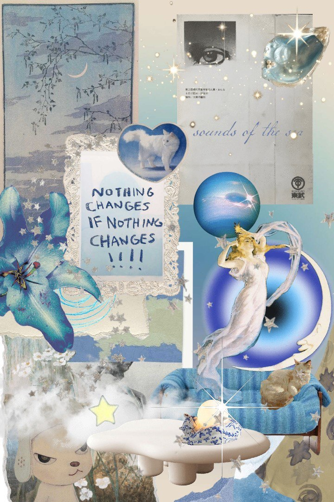

Collage is more than just assembling pictures; it's a dynamic art form born from curation and transformation. It thrives on the magic of juxtaposition, bringing together disparate elements – fragments of photographs, textures, colours, perhaps snippets of text – drawn from different worlds and contexts. In the hands of an artist, these fragments transcend their original meaning to participate in a new, unified narrative or aesthetic statement


The true beauty and measure of a successful collage lie in the harmony achieved amidst this diversity. It's a delicate balancing act, a testament to the creator's taste and discerning eye. Finding the perfect resonance between contrasting textures, marrying unlikely colour palettes, orchestrating scale and placement – this requires intuition and skill. When done well, a collage doesn't feel random; it feels intentional, curated, guiding the viewer's eye through a landscape rich with unexpected connections and layered meanings. It transforms the familiar into the fascinating, creating a visual poetry where the whole becomes infinitely greater than the sum of its parts
Here
are some tips and tricks for creating the best collages.
Start with a Vision (or Let One Emerge). It helps to have a general idea, emotion, color palette, or theme in mind, like "nostalgia," "urban energy," or "dreamscape," as this guides your choices. However, be flexible; sometimes the best ideas emerge while sorting through materials, so stay open to unexpected directions
Gather Diverse Materials. Look beyond magazines to find old books, maps, sheet music, photos, fabric scraps, tissue paper, textured paper, postcards, labels, or even dried leaves. Variety is key, so collect images and textures in different sizes, colors, and styles. More options mean more creative possibilities. If you have a theme, consider related keywords and look for visuals representing them
Decide on a focal point – what you want the viewer to notice first – and make it stand out through size, color, or placement. Importantly, play before you stick: arrange and rearrange your chosen elements on your background without glue first. Try multiple layouts and perhaps take photos with your phone to compare different arrangements easily. Distribute visual weight to achieve balance; balance large elements with smaller ones, dark areas with light ones, and busy textures with calm spaces. Asymmetrical balance often feels more dynamic. Use lines, shapes, or contrasting colors to create a path that guides the viewer's gaze through the artwork. Create depth by overlapping pieces strategically, thinking about foreground, middle ground, and background. Slightly overlapping elements helps integrate them. Embrace negative space; don't feel the need to fill every inch. Empty space is crucial for balance and prevents the collage from looking cluttered, giving elements room to breathe. Experimenting with scale, like juxtaposing elements of vastly different sizes, can create surreal and eye-catching effects
Use sharp craft knives or precision scissors for crisp edges, or consider tearing paper for a softer, more organic texture – use both intentionally. Choose the right adhesive, like acid-free glue sticks for thin paper to avoid wrinkles, or PVA glue or gel medium for heavier paper or adding dimension. Apply adhesive evenly across the back of the piece you're adding. Generally, it's easier to work from background to foreground, placing background elements first and layering foreground pieces on top
Consider integrating elements by adding drawn lines (pencil, ink), paint splatters, or washes of color over parts of the collage to unify them or add emphasis. You can add physical texture with materials like fabric or sand, or apply a layer of clear gel medium for a subtle textural effect. Optionally, seal your work by applying a clear sealant like matte or gloss acrylic medium or varnish to protect the collage and give it a uniform finish
Trust Your Gut. Collage is intuitive. If an arrangement feels right to you, go with it, don't overthink every single placement. Step back frequently to view the collage from a distance to check the overall balance and impact. Experimentation is key in collage, so don't be afraid to try things out.
here are some of my works :)